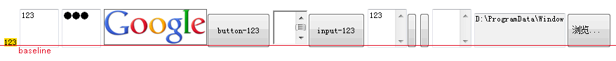
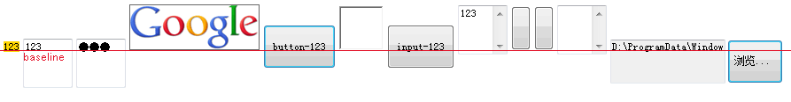
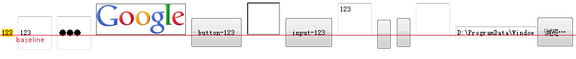
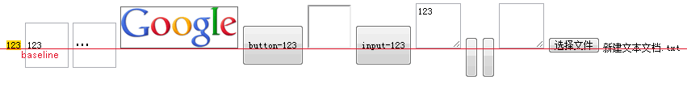
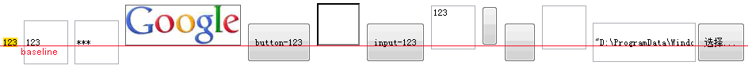

关于 'vertical-align' 属性说明请参照 W3C CSS 2.1 规范：http://www.w3.org/TR/CSS21/visudet.html#propdef-vertical-align
关于基线 ( baseline ) 标准判定参见 ： http://people.w3.org/rishida/docs/unicode-tutorial/part6#baseline
关于替换元素的说明，请参考 W3C CSS 2.1 规范描述：http://www.w3.org/TR/CSS21/conform.html#replaced-element
关于行内替换元素高度计算的说明，请参考 W3C CSS 2.1 规范描述：http://www.w3.org/TR/CSS21/visudet.html#inline-replaced-height
不同浏览器对单行文本输入框和显示为按钮的控件基线位置理解不同。
如果作者预期行内替换元素会按照其底边位置垂直对齐而没有修改 'vertical-align' 默认值 'baseline'，将会导致各个元素按照基线位置对齐后整体排列效果不佳清楚出现。
| 所有浏览器 |
|---|
垂直对齐样式 'vertical-align' 负责行内元素垂直方向排列情况，此样式不可继承，它的默认值为 'baseline'。
关于 baseline 概念可以简化理解为当行框内是文本的时候，其 'baseline' 位置应该在文字底边界，这同样运用于行内非替换元素上。
但是当行框内出现替换元素时，其自身的 'baseline' 位置又在什么地方呢？ 关于这一点规范中没有明确说明。
分析以下代码，我们使用常见的行内替换元素来验证这个问题：
<style> img,button,input,iframe,textarea{margin:0; font-size:12px; font-family:simsun;
height:50px;} img{border:1px solid #666;} span {font-family:simsun;font-size:12px;} </style>
<span style="background:gold">123</span> <input style="width:50px"
type="text" value="123"/> <input style="width:50px"
type="password" value="123"/> <img
src="http://www.google.com/intl/en_ALL/images/srpr/logo1w.png"/>
<button>button-123</button> <iframe style="width:50px"></iframe>
<input type="button" value="input-123" /> <textarea
style="width:50px">123</textarea> <button></button> <input
type="button" value=""/> <textarea
style="width:50px"></textarea> <input type="file" />
代码中使用了普通行内元素 SPAN 内文字的基线为参考点，分析 INPUT[type="text"] INPUT[type="password"] INPUT[type="file"] INPUT[type="button"] BOTTON TEXTAREA IMG IFRAME 等常见行内替换元素的原始基线位置。
实际情况如下表：
| IE6 IE7 IE8(Q) |
|---|
|  |
| IE8(S) |
|  |
| Firefox |
|  |
| Chrome Safari |
|  |
| Opera |
|  |
根据上表可直观看出各浏览器对于行内替换元素的基线位置理解不一，特别是对有文字和无文字的按键元素基线位置和 INPUT 元素的基线位置理解不一。
而在 IE6 IE7 IE8(Q) 内，所有行内替换元素的基线位置几乎一致处于元素底边界附近。
现将主要差异整理成下表：
| 基线位置 | 所有浏览器 | |||
|---|---|---|---|---|
| IMG IFRAME | 处于元素底边界 | |||
| TEXTAREA | 大体处于元素底边界 | |||
| 文本域基线位置 | IE6 IE7 IE8(Q) | IE8(S) | Chrome Safari Firefox Opera | |
|
INPUT[type="text"]
INPUT[type="password"] |
大体处于元素底边界 | 处于输入框内文字底边界， 但是 'height' 设置不会使文字在输入框内垂直居中， 导致基线位置相对其他浏览器较高。 | 处于输入框内文字底边界， 但是 'height' 设置会使文字在输入框内垂直居中， 导致基线位置相对其他浏览器较底。 | |
| 有文字内容的按钮基线位置 | IE8(S) Chrome Safari Firefox Opera | |||
|
INPUT[type="button"]
INPUT[type="submit"] BUTTON |
处于按钮内文字底边界 | |||
|
无文字内容的
BUTTON 按钮基线位置 |
IE6 IE7 IE8 Opera | Firefox | Chrome Safari | |
| BUTTON | 大体处于元素底边界 | 处于元素垂直方向中心位置 | 处于元素垂直方向中心处偏上约1/2位置 | |
|
无文字内容的
INPUT 按钮基线位置 |
IE6 IE7 IE8 | Firefox Opera | Chrome Safari | |
|
INPUT[type="button"]
INPUT[type="submit"] |
大体处于元素底边界 | 处于元素垂直方向中心处少量偏下位置 | 处于元素垂直方向中心处偏上约1/2位置 | |
| 文件选择域基线位置 | IE6 IE7 IE8(Q) | IE8(S) | Firefox Opera | Chrome Safari |
| INPUT[type="file"] | 大体处于元素底边界 | 处于输入框内文字底边界， 但是 'height' 设置不会使文字在输入框内垂直居中， 导致基线位置相对其他浏览器较高。 | 处于输入框内文字底边界， 但是 'height' 设置会使文字在输入框内垂直居中， 导致基线位置相对其他浏览器较底。 | 处于选择文件按钮的文字底边界 |
避免使用 'baseline' 对齐方式，为元素指定 'vertical-align' 值非 'baseline'，推荐使用 'vertical-align:bottom' 或 'vertical-align:top'。
| 操作系统版本: | Windows 7 Ultimate build 7600 |
|---|---|
| 浏览器版本: |
IE6
IE7 IE8 Firefox 3.6 Chrome 4.0.302.3 dev Safari 4.0.4 |
| 测试页面: | inline_non_replaced_elements_baseline.html |
| 本文更新时间: | 2010-07-22 |
baseline inline 基线 行内替换元素 input button img iframe